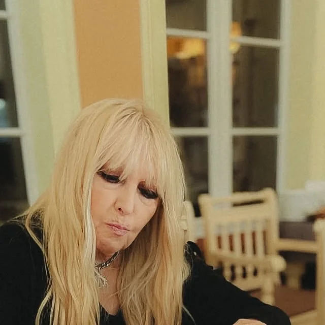
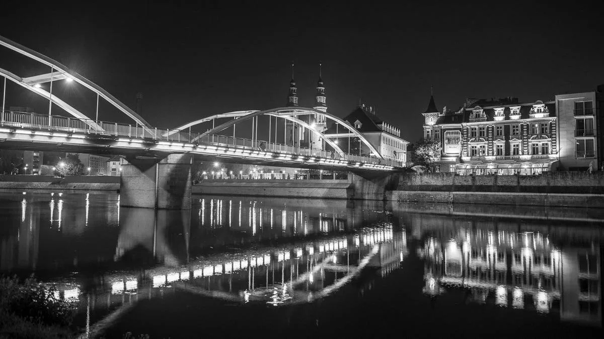

Maryla Rodowicz gościła w Restauracji Starka w Opolu
Marylę Rodowicz — jedną z najbardziej rozpoznawalnych artystek w Polsce — mieliśmy przyjemność gościć przy naszym stole nad Odrą. Wspominamy tę wyjątkową wizytę.
Czytaj dalej →Blog Restauracji Starka
Rodzinna restauracja w zabytkowej kamienicy w sercu Opola. Zaglądamy do kuchni, wspominamy gości i zapraszamy na to, co u nas najlepsze — od 1999 roku.

Marylę Rodowicz — jedną z najbardziej rozpoznawalnych artystek w Polsce — mieliśmy przyjemność gościć przy naszym stole nad Odrą. Wspominamy tę wyjątkową wizytę.
Czytaj dalej →
Kiedy Opole żyje muzyką, my żyjemy festiwalowym rytmem razem z miastem. Podpowiadamy, gdzie dobrze zjeść przed koncertem i po nim — tuż nad Odrą.
Czytaj dalej →
Zabytkowa kamienica na Ostrówku, taras nad rzeką i kuchnia, która łączy polską tradycję z europejskim smakiem. Opowiadamy, skąd wziął się klimat, po który wracacie.
Czytaj dalej →